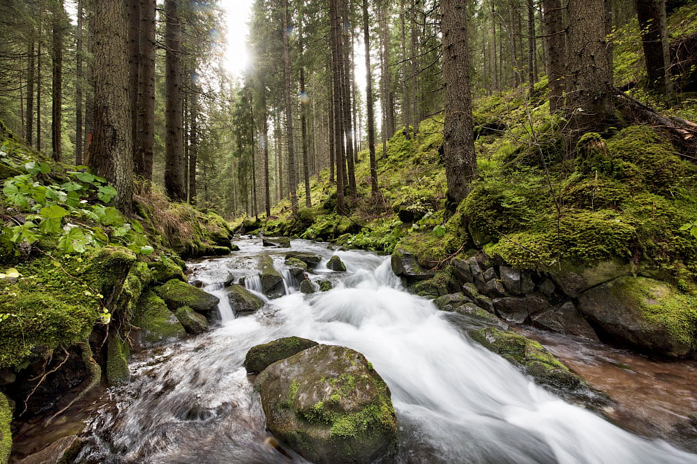

"La scelta biologica è un impegno irrinunciabile"
Il Pastificio Felicetti definisce la scelta biologica come un valore fondamentale basato su metodi di coltivazione responsabili, che escludono la chimica e tutelano la fertilità del suolo. Attraverso l'uso di materie prime incontaminate e lavorazioni rispettose, l'azienda persegue una filosofia che va oltre i protocolli, promuovendo un ripensamento della qualità della vita e una forte responsabilità sociale.
L'etica ambientale è sempre stata per il Pastificio un obiettivo fondamentale, anche per tutelare la natura che ci circonda e oggi abbiamo deciso di fare un ulteriore passo avanti proiettandoci in un futuro dove le confezioni sono non solo riciclabili, ma anche sostenibili. La nostra pasta ha un nuovo packaging, realizzato al 100% con carta, come certifica il marchio stesso sulle confezioni.
Realizzato in carta naturale pura cellulosa, certificata PEFC, proveniente da foreste gestite responsabilmente, secondo rigorosi standard ambientali, sociali ed economici di grammatura attentamente studiata, per garantire elevate performance in termini di resistenza e al peso del prodotto e nelle linee di confezionamento.
Il nostro packaging è mono materiale, riciclabile al 100% e quindi diventa risorsa per impieghi successivi, è prodotto con materiali biodegradabili e compostabili, quindi rispetta l'ambiente, è traspirante ovvero protegge l'alimento da agenti esterni senza creare condensa e umidità e conserva le proprietà organolettiche del prodotto. All'interno di questa confezione, la pasta Felicetti trova l'ambiente ideale per conservare il gusto e il profumo del prodotto appena trafilato.
Nel 2024, per il terzo anno consecutivo, Felicetti è stata inserita da Forbes tra le 100 aziende più sostenibili d'Italia.
Un riconoscimento importante, frutto di un impegno che il Pastificio ha assunto sin dalla fondazione e che abbiamo scelto di documentare nel nostro Report di Sostenibilità. Perchè tutti possiamo fare qualcosa per migliorare il mondo in cui operiamo, cominciando con il fare sempre meglio ciò che sappiamo fare, nel rispetto delle persone e dell'ambiente.